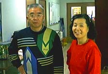

|
「神に依る芸術教育をする」というのが、ＰＬ学園小学校の設立の目的でした。しかし「神に依る」ということもむずかしいし、「芸術教育」ということはもっとむずかしいのです。結局、なんのことかわからないままに、私の前半生は過ぎました。しかし、脳溢血、半身不随という大変有り難いお蔭を頂き、神に生かされている自分というものを発見してみますと、これはこれは、後半生には大変見事な世界が展開し始めようとしています。 「子は親の鏡である」という封印されてきた真理の扉も開かれるような予感がします。家内も私の意のあるところを瞬時に汲み取って、ホームページ上の操作をしてくれています。「後半照照前半を照らす」ということにでもなればと思い、でんでん虫のホームページを通し、児童教育の世界にささやかな提言を試みるべく、ホームページを開設した次第です。 平成9年 (1997年) 1月1日 でんでん虫敬白 |